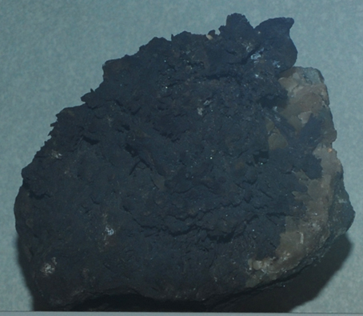

|

| MnS
This sample of alabandite is displayed in the Smithsonian Museum of Natural History. Alabandite is a sulfide mineral of manganese with the composition MnS. This sample is about 7x5 cm and is from Broken Hill, New South Wales, Australia. It also contains chlorargyrite and calcite.
|